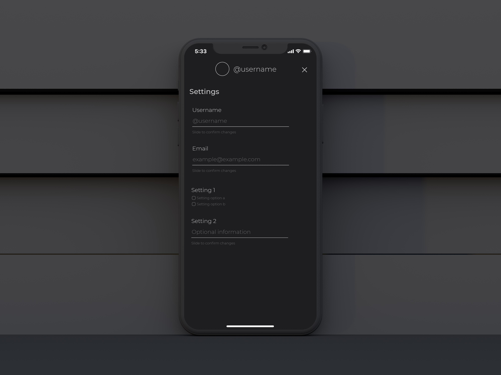

As a freelancer, I work with people to help them take their ideas from thoughts to real, efficient, working products. For this to be possible, I wear many hats during the creative process, including designing, programming, conducting UX research, and creating brand strategies.
Here are a few examples of real-life work.
When needed, I conduct primary and secondary UX research and create wireframes for clients who have either just an idea or an MVP. This comes with one or more consultations, where I help them further understand what works for their products, who it works for, and why. This usually precedes the design phase, where designs are fleshed out and an MVP starts to take form. Below is a real-life example of wireframes done after presenting a UX Research report:
Archival is a web application which creates a summarized PDF of whatever you may need. It can be used to create archives of your social media, articles, sites, etc. Archival is currently under developemnt.